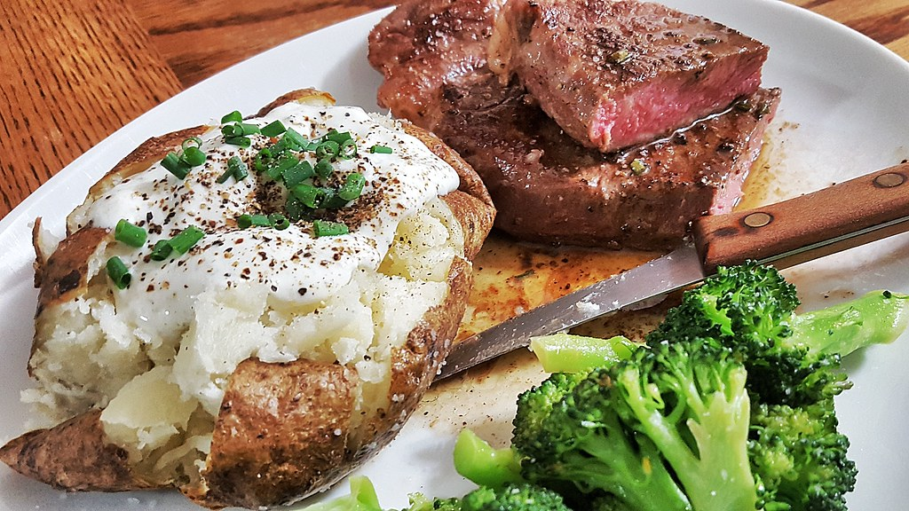

Steak & Potatoes

Rare steak with loaded baked potato
About
Indulge in the classic American dish of a perfectly cooked steak and a scrumptious loaded baked potato. This iconic duo has stood the test of time, evoking feelings of comfort and satisfaction on dinner tables across the nation. The juicy steak, seared to perfection with its tantalizing aroma, pairs exquisitely with the fluffy and creamy loaded baked potato, adorned with a medley of toppings like melted cheese, crispy bacon, and tangy sour cream. The beauty of this meal lies in its simplicity, making it accessible for anyone to recreate at home. With a good quality cut of steak, a few basic seasonings, and a bit of culinary finesse, anyone can prepare this mouthwatering combination. From weeknight dinners to special occasions, this timeless duo never fails to impress guests, leaving them with delectable memories that will linger long after the plates have been cleared.
Ingredients
- Steak (preferably ribeye or filet mignon)
- Potatoes (such as Russet or Idaho)
- Bacon (crispy and crumbled)
- Cheddar cheese
- Sour cream
- Green onions
- Butter
- Salt and pepper
Instructions
- Preheat over to 425°F (220°C) and season the steak generously with salt and pepper.
- Scrub the baking potatoes clean, pat them dry, and prick them several times with a fork.
- Place the potatoes on a baking sheet and rub them with a bit of melted butter.
- Bake the potatoes for about 60-75 minutes or until they are slightly squishy and the skin is crispy.
- Heat a grill or skillet over high heat and melt some butter for cooking the steak.
- Cook the steak for about 3 minutes on each side per inch of steak for medium-rare.
- Remove the steak from the heat and let it rest for a few minutes.
- Slice the steak against the grain into thin strip and set aside.
- Remove the baked potatoes from the oven, cut them open, fluff the insides with a fork, and load them up with the toppings.